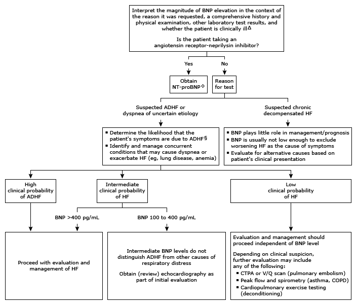

Initial evaluation of high B-type natriuretic peptide in adults*¶

This algorithm is intended for use with additional UpToDate content on BNP in the evaluation of HF.
BNP: B-type natriuretic peptide; NT-proBNP: N-terminal pro-B-type natriuretic peptide; ADHF: acute decompensated heart failure; HF: heart failure; CTPA: computed tomography pulmonary angiography; V/Q: ventilation/perfusion; COPD: chronic obstructive pulmonary disease.
* This algorithm addresses the use of BNP in the evaluation of decompensated HF or dyspnea of uncertain etiology. The diagnosis of HF is a clinical diagnosis based upon finding a constellation of clinical symptoms and signs. Conditions other than HF can also cause high BNP levels. Refer to UpToDate graphics on the common triggers of elevated BNP and NT-proBNP.
¶ In general, BNP levels <100 pg/mL are optimal for excluding a diagnosis of HF. BNP is cleared by the kidneys, and optimal cutoff values for diagnosis in patients with chronic kidney disease have not been clearly established. Interpretation of a specific abnormal result should be based upon the reference range reported with that result.
Δ Patients with ADHF require prompt diagnosis, identification of the underlying cause(s) and triggers, and treatment. ◊ Unlike BNP, NT-proBNP levels do not increase in patients taking an angiotensin receptor-neprilysin inhibitor.
§ The pretest probability of HF is based on traditional assessment (ie, a comprehensive history, physical examination, and review of tests usually obtained at the time of BNP measurement).